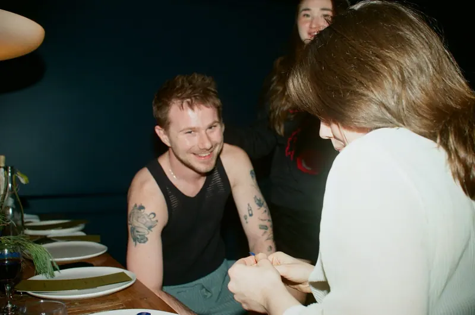

Story
A practice, a namesake, and the reasons for both.
is a design practice and a namesake — architecture, interiors, objects, print and digital work, made with care for the people who use them.1
People, places, projects, objects, culture. The work lives in Practice; the friends, makers and things that surround it live in World.2 Good ideas, better company — the same ideas in different places.
- 1 — care of: the work is addressed to someone.
- 2 — world: notes, sightings, and links out to the people worth knowing.
By middle name, I’m Tanner.
Joshua Tanner Harrison
Josh Harrison
Brooklyn-based architect and designer working across buildings, interiors, furniture, print, brands and photography. Tanner is his middle name.
Experience
- 01Ralph LaurenProject Manager, Store Design2026 –
- 02Wesley Moon Inc.Designer — architecture, interiors, urban design2024–26
- 03Hart HowertonDesigner — resort, residential, master planning2022–24
- 04Bedrock DetroitArchitecture Coordinator — urban development, place-making2017–20
Education
- 01University of VirginiaMaster of Architecture2020–22
Home as Possibility
On the closet, the bedroom, the house and the home — and six ways to design for the possibility of home.
Read the manifestoClose the manifesto
I write this with an acknowledgment of my privilege as both a white gay male within the Queer community and as someone that has always had a shelter over their head. I write this from the perspective of having grown up with a single mother raising two children, from having watched her make sacrificial life decisions in order to keep us within a dwelling, from having relocated so many times that growth was never to be held in one place. I know that, because of this, I walk with both an inability to settle and an understanding of home as the overwhelming, all-encompassing emotion of arrival.
We choose to adhere to traditions of the past as our rate of change increases exponentially. We’re taught Monopoly in order to play the game of capitalism. We clothe our bodies with the market as if it is embedded within our DNA. We assume wealth is interchangeable with value. We accept fiction as fact. We find meaning in that which we orient ourselves to. For those of us born into a world disoriented, it is in our reorientation that greater truths emerge. The reorientation process is a hunt for meaning and quest for acceptance. To consider existence is to consider the inevitable opposite: not existing. The greatest fear and truth does not discriminate; we do. Finding purpose through Queer existentialism requires coveting the sacredly-private on while we hunt and forge towards our own liberating publics. The closeted Queer body is perceived to be in a constant surveillance state of most private and most public, where heightened are performances of harsh stoicism and supercharged eruption.
Consider the closet: a room, ubiquitously understood, embedded with spatial implications. To come out of the closet is to shed the first layer of a thickened skin. Delayering the Queer body is non-linear and lifelong; it is a constant shedding of skins at varying intervals dictated by a spectrum of climate conditions one must snake through on their quest for home. “Coming out” does not rid the closet of what’s inside, nor does it imply that layers once worn can’t be put back on. The Queer body is Bachelard’s casket; delayering (coming out) breaks the dialectics of inside and outside; the most private and most public become one.
Consider the house: a collection of rooms, one being a bedroom encompassing a closet. If the closet is acceptance within one’s skin, the bedroom is acceptance within one’s space, becoming the second most sacred layer. Now we have two layers that one must come out from, each bound by four walls, each with spatial implications, one within the other as a nesting doll.
Consider the home: a collection of rooms, one being a bedroom encompassing a closet. In leaving the bedroom, one may walk down the corridor, through the living room, and make a stop in the kitchen before they are able to freely exit; each additional volume within this navigational sequence, too, has its own spatial implications. To feel at home is to know the ease of navigating these layers as one; to have a house is to know the boundaries that define them.
Home is an association of place, an unbound, non-physical ideological condition of security that begins with finding comfort in one’s skin; for the Queer body, home is first, quite literally, where the heart is.
On How to Design for the Possibility of Home
- Be the casket. Make an unimpeachable case that foregrounds your being within a logical operation.
- Unlearn conventions of domesticity embedded in the patriarchal dwelling; consider alternative methods of residence that prioritize identities over formal precedent.
- Design one sacred room with the affect of the first time, every time.
- Layer private and public. Reconsider thresholds and interstitial spaces as opportunities to connect and Queer one’s spatial experience.
- Enable spatial autonomy by prescribing the unscripted, embedding an aesthetics of access.
- Consider the skin on your back. Elevate the invisible preconditions of the site; celebrate and orient towards every edge.
Josh HarrisonDecember 2021
Selected references — Ahmed, Queer Phenomenology · Bachelard, The Poetics of Space · Colomina & Bloomer, Sexuality & Space · Foucault, Of Other Spaces · McHarg, Design with Nature · Pallasmaa, The Eyes of the Skin · Potvin, Bachelors of a Different Sort · Solnit, Wanderlust